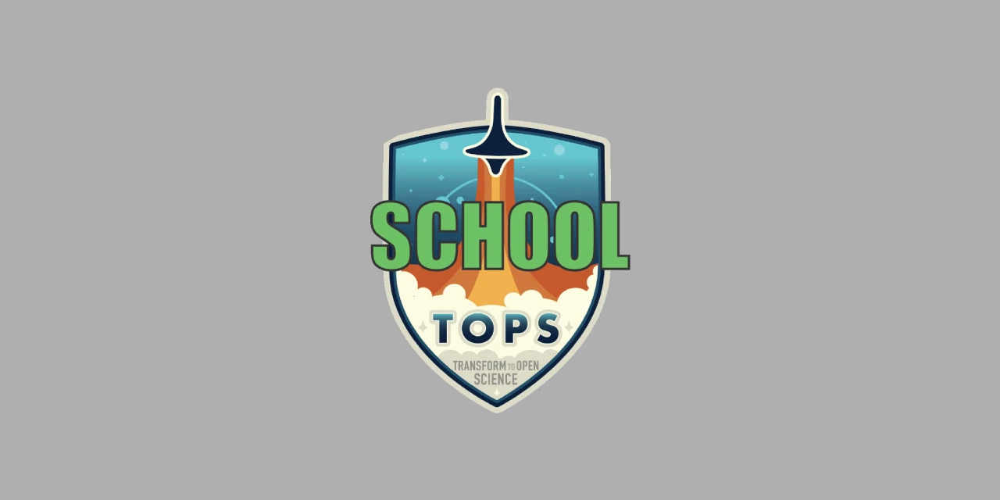

Hello Hello!
Join us as we guide you through NASA's TOPST open science initiative, a community dedicated to collaboration, discovery, and inclusive scientific practices.
TOPST SCHOOL Beta
Science Core Heuristics for Open Science Outcomes in Learning (SCHOOL), is an integral part of NASA's Transform to Open Science (TOPS) Training initiative. Our mission is to cultivate a vibrant, inclusive culture of open science that welcomes everyone — students, researchers, and curious minds alike — to engage, learn, and contribute to the world of scientific discovery.
The SCHOOL curriculum is a thoughtfully designed program that offers five immersive, 2.5-hour learning modules. These sessions are more than just lessons — they are interactive, interdisciplinary journeys through some of the most critical themes of our time. Whether it’s exploring the intricacies of water systems, health and air quality, environmental justice, natural disasters, climate change, agriculture, or the challenges posed by wildfires, our curriculum weaves together these diverse topics with a common thread, the importance of Open Science.
Open Science, Open Minds Beta
In each module, you’ll find a rich blend of lessons that are not only informative but also transformative. We dive deep into Earth Science Applications, offering real-world use cases that show you how to access and analyze vast data sources. These lessons are rooted in the principles of FAIR data management — ensuring that the scientific data you work with is Findable, Accessible, Interoperable, and Reusable. By learning to navigate these open data science lifecycle workflows, you’re not just gaining knowledge; you’re acquiring the tools to make meaningful contributions to the global scientific community.
Tip
The SCHOOL program covers a wide range of topics. Don’t feel overwhelmed if you’re new to some of them. Take your time with each module, and remember that learning is a continuous process. There are plenty of resources and a supportive community to help you along the way.